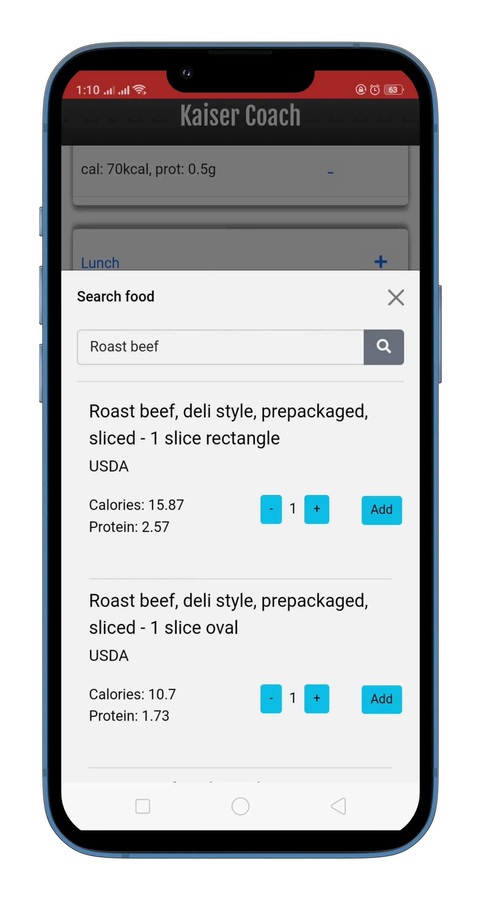

<div class="container position-relative text-center" id="teaser-wrap">
    <h3>A Preview of Your KaiserCoach App!</h3>
    <div class="d-block mx-auto position-relative" id="teaser-box">
      <div class="d-flex bd-highlight mx-auto mb-3">
        <div class="p-2 bd-highlight teaser-flex" data-order="3"></div>
        <div class="p-2 bd-highlight teaser-flex" data-order="2"></div>
        <div class="p-2 bd-highlight teaser-flex" data-order="1"></div>
      </div>
  
     
    </div>
  
    <div class="row w-100 position-absolute top-50">
      <div class="col-6 display-1 text-start">
        <i class="fas fa-caret-left teaser-nav" style="cursor: pointer;" onclick="changeOrder('prev')"></i>
      </div>
      <div class="col-6 display-1 text-end">
        <i class="fas fa-caret-right" style="cursor: pointer;" onclick="changeOrder('next')"></i>
      </div>
    </div>
  </div>
  
  
  
  
  
  
  
  
  
  
  
  <script>
  
  
  function changeOrder(dir) {
    // const allSlides = document.querySelectorAll(".single-slide");
    const allSlides = document.querySelectorAll(".teaser-flex");
    // const previous = "1";
    const previous = (dir === 'next') ? "1":"3";
    const current = "2";
    // const next = "3";
    const next = (dir === 'next') ? "3":"1";;
  
    for (const slide of allSlides) {
      const order = slide.getAttribute("data-order");
  
      switch (order) {
        case current:
          slide.setAttribute("data-order", previous);
          break;
        case next:
          slide.setAttribute("data-order", current);
          break;
        case previous:
          slide.setAttribute("data-order", next);
          break;
      }
    }
  }
  </script>